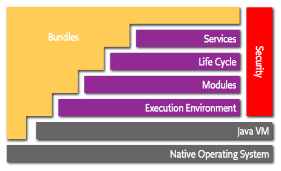

Welcome FuseESB!! New highly distributed soluction!!!
JUDCon2013
Created by Luan Cestari / G+/ Facebook/ @BR_LuanCestari
http://bit.ly/111MbzV
Who is the presenter?
Luan = algorithms + entrepreneur + computer nerd/geek + open source
Who are you?
Are you a boy or a girl?

Agenda
- History
- What is FuseESB
- Enterprise Integration Patterns and other things
- Solutions
Key points
- New Paradigms/Technologies
- SOA
A bit of history applications
- Desktop/mainframe
- Client/Server
- Web
- Mobile
- Cloud
- Big Data
"Fruit Salad"
To much data and Endpoints!!!
This mean ... many integrations
The problems
- No standard
- No effient tests
- No monitoring
- ...
Order can emerge from chaos:
.
..
SOA
What is FuseESB
An Enterprise Integration Framework
More! It's Integration Suite!!!
About Fuse history
Fuse components:
CXF
ActiveMQ
Camel
ServiceMix
Karaf
Fabric
And there is even more components:
Apache Felix
Apache Aries
Apache Cloudstack
and so on...
Overview of core components:
Apache Camel
Apache Camel
Most widely used integration framework!
+130 components
- 50+ endpoint
- 35+ EAP
DSL (in Java & Spring)
Deploy anywhere!
Support Transactional SEDA architecture
Apache Camel
Basically 3 types of classes:
- Camel Endpoints
- Camel Processors
- Camel Components
Apache Camel
Example of Camel DSL:
Apache Camel
Some Integration Patterns:
- Content Based Router
- Message Filter
- Receipent List
- Splitter
- Aggregator
- Resequencer
- Throttler
Apache Camel
How Camel works:
- A listener endpoint
- A processing component (optional)
- A target endpoint
Apache Camel
Real world Example in Java:
from("ftp://john@localhost/ftp?password=nhoj")
.to("xslt:MyTransform.xslt")
.to("activemq:queue:MyQueue")
Apache Camel
Real world Example in XML:
<camelContext id=“camel” xmlns=“http://activemq.apache.org/camel/schema/spring”>
<route>
<from uri=“ftp://john@localhost/ftp?password=nhoj”/>
<to uri=“xslt:MyTransform.xslt”/>
<to uri=“activemq:queue:MyQueue”/>
</route>
</camelContext>
Overview of core components:
Apache CXF
Apache CXF
Leading open source web services stack for Java
JAX‐WS and JAX‐RS Certified
Very flexible
Reference implementation of OSGi Remote Services Specification
Used by Google, TomTom, FuseSource, JBoss, WS02, Paramiti, MuleSoft, Talend, TomEE etc
Apache CXF
Rest:
- JAX-RS 1.1 and JAX-RS 1.0 (JSR-311)
- JAXB 2.0 (JSR-222)
Apache CXF
Rest actions:
- Get = retrieve current state of a resource
- Put = replace the current state of a resource
- Post = create a new resource
- Delete = removee a resource
Apache CXF
Rest example:
@Path("/user-service/")
@Produces("application/xml")
public interface UserService {
@GET
@Path("/users")
@Produces({"application/xml", "application/json"})
public UserCollection getUsers();
@GET
@Path("/user/{id}")
public User getUser(@PathParam("id") Integer id);
}
Apache CXF
SOAP and WSDL:
- Standards for message exchange
- SOAP=XML=Envelope[Header+Body]
- WSDL
- Operations
- Input/Output
- Easy to verify adherence
Apache CXF
SOAP Request:
POST /InStock HTTP/1.1
Host: www.example.org
Content-Type: application/soap+xml; charset=utf-8
Content-Length: nnn
<?xml version="1.0"?>
<soap:Envelope xmlns:soap="http://www.w3.org/2001/12/soap-envelope" soap:encodingStyle="http://www.w3.org/2001/12/soap-encoding">
<soap:Body xmlns:m="http://www.example.org/stock">
<m:GetStockPrice>
<m:StockName>IBM</m:StockName>
</m:GetStockPrice>
</soap:Body>
</soap:Envelope>
Apache CXF
JAX-WS and Security:
- JAXB reference implementation
- Can generate code
- WS-Notification
- WS Token Service
Overview of core components:
Apache ActiveMQ
Apache ActiveMQ
Overview:
- JMS 1.1 and 2.0
- AMQP 1.0
- Clustering and Fault Tolerance
- Publish/subscribe, point to point, message groups, streaming, destributed transaction and more
- Java, C/C++ and .NET
Apache ActiveMQ
Failover
Apache ActiveMQ
High Availability:
- Fully replicated Master/Slave
- JDBC Master/Slave
- Shared File System Master/Slave
Apache ActiveMQ
Broker Topologies
- Link ActiveMQ Brokers together
- Store and foward
- Uni-directional by default
- All Destinations are global
Apache ActiveMQ
Horizontal and Vertical Scaling
Overview of core components:
Apache Karaf
Introduction to OSGi
OSGi Alliance
Expert groups define the plataform
Introduction to OSGi
Problems of Java EE
- Lack of modularity
- Service Tracking
- Criteria-based service selection
- Life cyle for Components
- Mutiple versions of Components
- Hot-swapping of Components
OSGi
Apache Karaf
Lightweight OSGi container
Felix as OSGi Runtime
Provisioning
Powerful command line shell and Web
Highly extensible
Apache Karaf
Dynamic Configuration
Logging from mutplie APIs
Deployer
OS integration
Security
Instances Management
Overview of core components:
Apache ServiceMix
Apache ServiceMix
Overview:
- Open Source ESB
- SOAP and REST web services
- Messaging
- Use Karaf as Container
Apache ServiceMix
Apache ServiceMix
Normalized Message Router (NMR) (Camel Container)
JBI Container
Handles XML, POJO
Listener for endpoints and wiring them
Overview of core components:
Fuse Fabric
Fuse Fabric
Why:
- ServiceMix and ActiveMQ is complex to Configure
- Require a lot of upfront knowledge
- Different environment (private/public/hybrid cloud)
- Location
Fuse Fabric - Features
Support Hybrid deployments on premise, on cloud, on both
- Endpoints can be relocated
- Endpoints can be load balanced
- Endpoints can be elastic
- Endpoints can be highly available
Fuse Fabric - Features
Destributed Configuration
- Configuration has tb be accessed across mutiple domains
- Configuration has to highly available
Fuse Fabric - Features
Runtime Registry
- Discovery of services
- Discovery of endpoints
- Discovery of ActiveMQ
Fuse Fabric - Features
Destributed Management
- Easy elastic scaling of services
- Monitoring and control of resouces